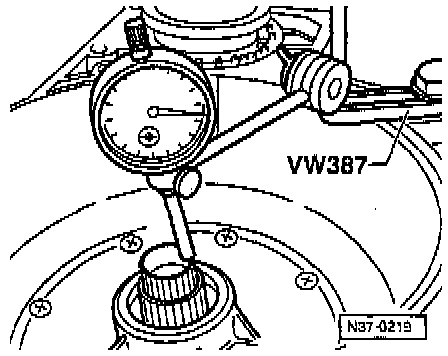

Clutch Play Between K1 and K2

COMPONENT NOTES AND INFORMATION
NOTE:
^ To adjust clutch play install components without shim (item 6)
^ Assembling planetary gearbox, refer to Planetary Gearbox Disassembly/Assembly. Service and Repair
1 Transmission housing
- Planetary gearbox installed up to small drive shaft, refer to Planetary Gearbox Disassembly/Assembly. Service and Repair
2 Axial needle bearing with washer
- Axial needle bearing faces toward small input shaft
- Washer faces toward -K3-
3 4th gear clutch -K3- with pump shaft
4 O-ring
5 1st to 3rd gear clutch -K1- with turbine shaft
6 Shim
- Do not install when adjusting clutch play
- 1 or 2 shims can be installed
7 Reverse gear clutch -K2-
Determining Shim -A-

A - Shim
1 - ATF pump
2 - Reverse gear clutch -K2-
3 - 1st to 3rd gear clutch -K1-
4 - 4th gear clutch -K3-
- Calculate thickness of shim. Determine gap "x" and calculate shim thickness.
Gap x = a - b
Calculating "a":

- Place straightedge "A" onto housing.
- Press -K1- down in direction of arrow and measure distance into -K1- with depth gauge "B".
Example:
Reading 1 = 88.5 mm

- Measure with depth gauge "B" to pump flange on housing.
Example:
Reading 2 = 34.3 mm
Calculation:
Reading 1 minus Reading 2 equals Calculated size a
88.5 mm - 34.3 mm = 54.2 mm
= Size measured from pump flange/housing into -K1-.
Calculating "b"

- Place straight edge -B- onto stator support (arrow) and measure with depth gauge -A- to gasket of pump flange.
Example:
Reading minus Straightedge Thickness equals Calculated size "b"
70.5 mm - 19.5 mm = 51.0 mm
Calculating and Determining Shim -A-
Gap x = a - b
(Gap a) 54.2 mm - (Gap b) 51.0 mm = (Gap x) 3.2 mm
K1/K2 Clutch Play Table Of Shims:

- Determine size of shim according to table above:
- Determine thickness of shims according to table and obtain from the parts supplier.
- Perform clutch play check measurement below after installing ATF pump.
Check Measurement (Clutch Play)
- The clutch play cannot be measured until the ATF pump has been installed.
- Attach dial gauge holder to transmission housing and place dial gauge on turbine shaft with a preload of 1 mm.

- Move turbine shaft up and down and read play on dial gauge.
Play:
Minimum = 0.5 mm
Maximum = 1.2 mm